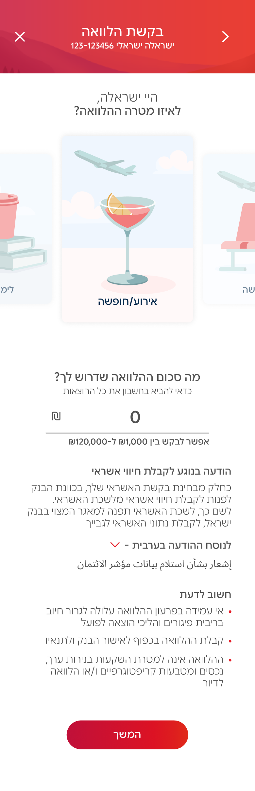
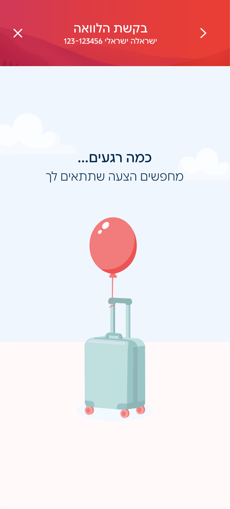
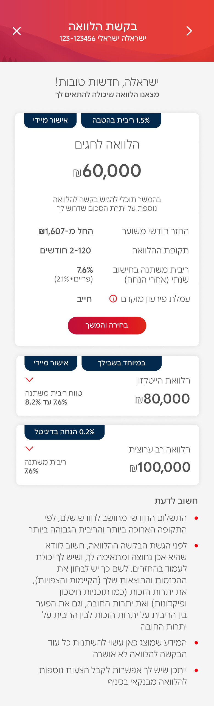
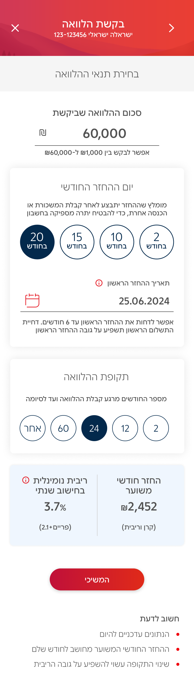
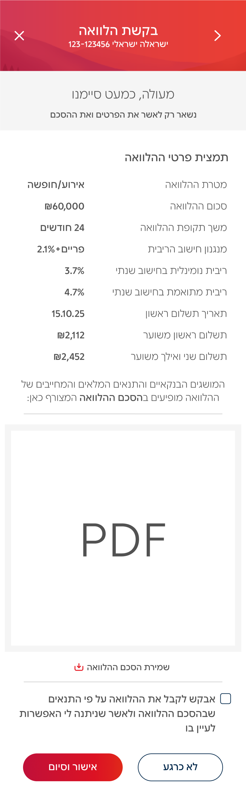

Digital Loans.
Year
2026
Role
Product Design Manager
Duration
6 months
Scope
Product Strategy, UX, UI, Microcopy, Usability Testing, Legal Collaboration, Design System, Animations
Redesigned Bank Hapoalim's loan experience: a single long scroll of 15+ raw options, spanning four distinct loan products, became a 3-path, intent-based flow.
digital
adoption
Cumulative growth in digital loan adoption.
self-service
migration
Loan applications moved to digital self-service.
monthly
flow entries
People entering the loan flow every month.

the challenge.
The digital loans experience wasn't one flow, it was four. A new loan request, a refinance, a car loan, and a universal loan open to any customer, each with its own dependencies, backend models, and layer of business and regulatory rules. All of it surfaced through the same legacy lobby: one long scroll of 15+ raw options with no hierarchy.
Multi-Platform Friction
Built around internal banking structures, not user intent, driving high drop-offs.
Cognitive Overload
15+ raw, confusing options at once, with no hierarchy or differentiation.
The Core Dilemma
How many offers to show, in what order, and which metadata truly drives the decision.
The Transactional Gap
Dry, legalistic, intimidating: disconnected from the user's real milestone.
the mvp.
The first proposal was to simplify the loan-type logic itself, bank-wide. That was blocked by backend and organizational constraints, so the fix moved to the UX layer instead: change what the user is asked, not what the bank offers.
Intent-Based Discovery
Invert the funnel: capture amount and purpose first, then surface focused, eligible offers instead of 15+ undifferentiated options.
A Backend Constraint, Reframed
Reducing the loan-type logic itself wasn't possible in one move. Reordering the flow around it was.
Continuous Iteration
Balance compliance with user psychology through testing: smart bundling resolves best rate versus full amount.
the strategy.
Declaring the loan's purpose is a mandatory field for every credit provider in Israel, not a design choice. Instead of treating it as a compliance checkbox, it became the engine for the entire experience's tone, illustration, and closing moment.
A Regulatory Step, Reframed
A field the bank is required to ask becomes the reason the rest of the flow feels considered instead of generic.
Emotional & Human-Centric
Turn a dry transaction into an aspirational milestone with contextual visual worlds and reassuring microcopy.
Six Distinct Journeys
Vacation, car, medical, studies, debt coverage, or shopping, each with its own illustration, loader microcopy, and closing moment.
happy flow.





the proof.
Self-Service Shift
Migrated 80% of loan applications to digital self-service, cutting call-center dependency for roughly 180,000 people who enter the flow every month.
Streamlined Decision Making
Fewer drop-offs by removing choice paralysis and simplifying the metadata needed to pick an offer.
Cross-Squad Alignment
Unified design guidelines across 4 autonomous business lines, a baseline for scale.
Cumulative growth in digital loan adoption.
what I learned.
I originally wanted to fix the loan structure bank-wide, not just in the digital channel, but that was too complex organizationally to take on. Scoping down to digital still delivered real impact, and knowing when to make that trade-off is its own skill.